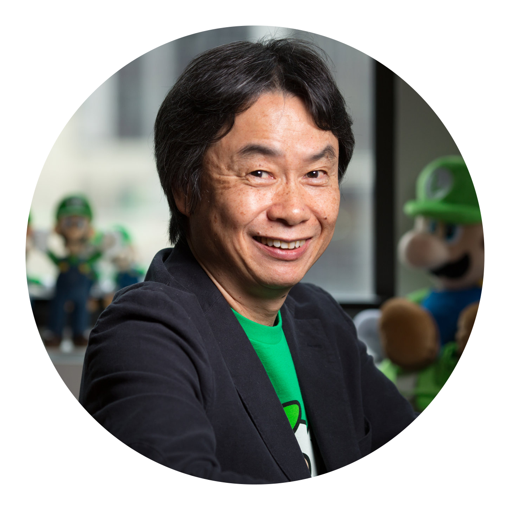

Desarrollo de la saga
Shigeru Miyamoto fue el responsable del desarrollo de The Legend of Zelda, que fue lanzado para Nintendo Entertainment System en 1986. En Mario, Miyamoto sustituyó el valor de la puntuación más alta por el de un objetivo más concreto, "completar" el juego. La evolución de los juegos de pruebas de resistencia a los relatos sencillos dio a los jugadores una meta más allá de la simple supervivencia continua.
| Diseñador y Productor de videojuegos |
Shigeru Miyamoto (Kioto, 16 de noviembre de 1952) es un diseñador y productor de videojuegos japonés que trabaja para Nintendo desde 1977. Es considerado como «el padre de los videojuegos modernos» o «el Walt Disney de los juegos electrónicos» por haber creado algunas de las franquicias más influyentes de la industria, entre las que se encuentran Mario, Donkey Kong, The Legend of Zelda, Star Fox, Pikmin y F-Zero.
En el año 1977, cuando tenía 24 años de edad, conoció a Hiroshi Yamauchi mediante un contacto de su padre con este; en ese entonces Yamauchi era el presidente de Nintendo y además era un amigo de su padre. Yamauchi lo contrató como «artista del personal» ese mismo año, pintando paneles de máquinas arcadia, y poco después trabajaría como diseñador.
Cuando la empresa de Nintendo comenzaba a ramificarse, Miyamoto ayudó con el diseño del primer y original videojuego arcade que operaba mediante la introducción de monedas que la empresa desarrolló, Sheriff, pero debido principalmente a la pérdida de interés de los consumidores por jugar videojuegos el título no consiguió las ventas esperadas. Ayudó también por primera vez a desarrollar un videojuego con el lanzamiento de 1980 Radar Scope.
Miyamoto imaginó muchos personajes y conceptos del argumento, pero finalmente se decidió por un triángulo amoroso entre un gorila, un carpintero, y una chica. Hizo referencia a la rivalidad entre los personajes de cómic Bruto y Popeye por la mujer Olivia Olivo. Bruto se convertía en un simio, una forma que Miyamoto describió como «nada malvado o repulsivo». Dicho simio sería la mascota del protagonista, «un chico divertido y relajado».